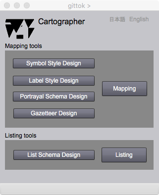

Cartographer
Introduction
This chapter explains what is cartography, and what cartographers do. But beforehand, the difference between data and information is explained at first. Information is different from data .Data is a set of codes combined under the rules for coding. Meanwhile information is data with meaning that receivers can understand.Information is produced from data by a process, which is called representation. Documentation, Voice encoding, Tabulation, and drawing graphs are representation. And mapping is a typical representation to produce a geospatial information. Cartography is technology for map makers and science for reseachers to realize better representaion of real world phenomena.
Meanwhile, there are five buttons on the Caertograoher page; Symbol style design, Label style design, Portrayal schema design, and Mapping. The functions of these buttons will be explained in detail at the pages opened by clicking these buttons.
In order to understand the Cartographer page, it's a good idea to look at the lecture slides before reading this page.
Lecture slide
13 Representation
Map Design
Cartographers should consider that map users decide his/her action by watching a map. Value of a map is evaluated not only by the quality of data source but also by the quality of design. Judith A. Tyner [Principles of Map Design, The Guilford Press, 2010, pp.18-23] stated that any design, whether of maps or buildings, has certain goals: clarity, order, balance, contrast, unity, and harmony.
Clarity
Clarity involves examining the objectives of the map, emphasizing the important points, and eliminating anything that does not enhance the map message.
Order
Since the map is a synoptic, not a serial, communication, cartographers cannot assume that readers will look first at the title, then at the legend, and so on. However, studies of eye movements show there is considerable shifting of view. For example, vertical lines lead the eye up and down on the map; horizontal lines lead the eye left and right.
Balance
Every element of the map has visual weight. These weights should be distributed evenly about the optical center of the page, which is a point slightly above the actual center. Generally, visual weight within a frame depends on location, size, color, shape, and direction. According to Rudolf Arnheim [Art and Visual Perception: A Psychology of the Creative Eye, University of California Press, 1969, pp.14-15] .
- Centrally located elements have less weight than those to one side.
- Objects in the upper half appear heavier than those in the lower half.
- Objects on the right side appear heavier than those on the left side.
- Weight appears to increase with increasing distance from the center.
- Isolated elements have more weight than grouped objects.
- Larger elements have greater visual weight.
- Red is heavier than blue.
- Bright colors are heavier than dark.
- Regular shapes seem heavier than irregular shape.
- Compact shapes have more visual weight than unordered, diffuse shapes.
- Forms with a vertical orientation seem heavier than oblique forms.
Contrast
Contrast is the difference between light and dark, thick and thin and light. A map created with only one line weight, one font size, and one font lacks construct, is boring to look at, and is hard to read.
Unity
Unity refers to the interrelationships between map elements. Lettering is not chosen in isolation; it must be legible over any background colors and shades, must not conflict with chosen symbols, and must suit the topic of the map.
Harmony
All of the elements (for example, color, pattern and font) on the map should work together. Overall map should have a pleasing appearance.
Cartographer page enables users to design symbol styles and label styles.Symbol/label style is a rule for drawing symbols and labels. For example, a shape of a road is drawn as a symbol. And its name is drawn as a label in compliance with a label style. A user can design portrayal schemata for his/her purposes by allocations of symbol styles and label styles for representations of feature geometries and feature attributes. Portrayal schema is used for a automatic transformation from a Kit into a map. A different map can be produced from the same Kit by assigning a different portrayal schema.
Map editing will be possible by opening a Kit and a portrayal schema, which was designed by adopting a symbol style dictionary and a label style dictionary designed with Symbol and Label style designers.
Gazetteer
Do you know there are geographic index lists at the end of atlases? The page and grid cell code in atlas is indicated and you can find the target object by using page number and grid cell code. Cartographer page includes 'Gazetteer Designer', which serves the function to create a geographic index list called a gazetteer. You can create a gazetteer by the selection of a combination of a place identifier and a geometric attribute included in one feature type. The target feature instance is moved to the center of the screen by the selection of identifier shown on the geographic index list in the gazetteer.
Generally, a gazetteer also has a meaning of a geographic name dictionary. The users can get various information about the target place, for example, culture, history, population, industry, and natural environment. Today, geographic name dictionaries developed by many countries and regions are available on the web. The users can experience similar service on the gazetteer in gittok, if the feature has various attributes.
Cartographer

Figure 1. Cartographer page
Button
Symbol Style Design
This button opens a page for symbol style design. A symbol is a graphic representation of a feature bythe geometric symbol in accordance with the symbol style. Symbol style deignser is used to design symbol styles.
Label Style Design
This button opens a page for label style design. A label is a graphic representation of a feature by the text string in accordance with the labale style. Label style designer is used to design label styles.
Portrayal Schema Design
This button opens a page for portrayal schema design. Portrayal schema is used for a automatic transformation from a Kit into a map. A different map can be produced from the same Kit by assigning a different portrayal schema.
Gazetteer Design
This button opens a page for gazetteer design. A gazetteer is a geographic inde. Th user can find a feature at the center of the creen, if he/she select a place identifier on the index list. The user can define and create gazetteer on Gazetteer designer page.
日本語
今あなたが読んでいるドキュメントが日本語で表示されます．
English
You can read the tutorial written in English.
References
Judith A. Tyner, Primciples of Map Design, The Guilford Press, 2010, pp.18-23